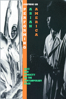

<body bgcolor="#FFFFFF" text="#000000" link="#0000FF" vlink="#CC0000" alink="#CC0000"><center><hr width="350" size="1" align="center" noshade>A fascinating inquiry into the territory of race and ethnicity in American theater<hr width="350" size="1" align="center" noshade><p><a href="https://cdcshoppingcart.uchicago.edu/Cart/ChicagoBook.aspx?ISBN=9781566395021&&PRESS=temple" target="_top">Buy this book!</a> | <a href="https://cdcshoppingcart.uchicago.edu/Cart/Cart.aspx?PRESS=temple" target="_top">View Cart</a> | <a href="https://cdcshoppingcart.uchicago.edu/Cart/Cart.aspx?PRESS=temple" target="_top">Check Out</a></p><p></p></center><!--none//--><h1>Performing Asian America</h1>
<H2>Race and Ethnicity on the Contemporary Stage</H2>
<h3>Josephine Lee</h3>
<P>cloth 1-56639-502-X $34.95, Feb 97, <FONT COLOR=#990033>Out of Print</FONT>
<br>paper 1-56639-637-9 $29.95, <FONT COLOR=#990033>Available</FONT>
<br>Electronic Book 1-43990-670-X $29.95 <FONT COLOR=#990033>Out of Print</FONT>
<BR> 256 pp
6x9
21&nbsp;halftones
</P><h3 align="center"><P><font color="#996633">Lifetime Achievement Award from the Association of Asian American Studies Conference,
2016</font></P>
</H3>
<p>At a time when Asian-American theater is enjoying a measure of growth and success, Josephine Lee tells us about the complex social and political issues depicted by Asian-American playwrights. By looking at performances and dramatic texts, Lee argues that playwrights produce a different conception of "Asian-America" in accordance with their unique set of sensibilities.
<p>For instance, some Asian-American playwrights critique the separation of issues of race and ethnicity from those of economics and class, or they see ethnic identity as a voluntary choice of lifestyle rather than an impetus for concerted political action. Others deal with the problem of cultural stereotypes and how to reappropriate their power. Lee is attuned to the complexities and contradictions of such performances, and her trenchant thinking about the criticisms lobbed at Asian-American playwrights-for their choices in form, perpetuation of stereotype, or apparent sexism or homophobia-leads her to question how the presentation of Asian-American identity in the theater parallels problems and possibilities of identity offstage as well.
<p>Discussed are better-known plays such as Frank Chin's <I>The Chickencoop Chinaman</I>, David Henry Hwang's <I>M. Butterfly</I>, and Velina Hasu Houston's <I>Tea</I>, and new works like Jeannie Barroga's <I>Walls</I> and Wakako Yamauchi's <I>12-1-a</I>.
<BR>&nbsp;<h2>Excerpt</h2><P>Excerpt available at <a href="http://www.temple.edu/tempress">www.temple.edu/tempress</a></p>
<BR>&nbsp;<h2>Reviews</h2>
<p><i>"One of the first major studies of Asian American drama, Lee's </i>Performing Asian America<i> serves as a cleanly argued and theoretically engaging study of the construction and performance of identity both onstage and off."</i>
<br>&#151<b><i>MELUS</i></b>
<p><i>"...as a first text on such matters Lee's important work establishes a solid grounding for future work on Asian American dramatic literature."</i>
<br>&#151<b><i>Asian Theatre Journal</i></b>
<BR>&nbsp;<h2>Contents</h2><P>
<p>Acknowledgments
<br>1. Critical Strategies for Reading Asian American Drama
<br>2. The Asian American Spectator and the Politics of Realism
<br>3. The Chinaman's Unmanly Grief
<br>4. The Seduction of the Stereotype
<br>5. Acts of Exclusion: Asian American History Plays
<br>6. Asian American Doubles and the Soul under Capitalism
<br>7. Staging "Passing" on the Borders of the Body
<br>Epilogue
<br>Notes
<br>Works Cited
<br>Index
<br>Photographs
</P><BR>&nbsp;<H2>About the Author(s)</H2>
<table><tr><td valign="top"><img src="/tempress/authors/1265_au.gif" height="90" width="75"></td><td width="100%" valign="middle"><p><B>Josephine Lee</B> is Assistant Professor of English at the University of Minnesota, Twin Cities.</P></td></tr></table>
<BR><H2>Subject Categories</H2>
<p><A HREF="/tempress/asian_amer.html" TARGET="_top">Asian American Studies</a>
<BR><A HREF="/tempress/american.html" TARGET="_top">American Studies</a>
<BR><A HREF="/tempress/literature.html" TARGET="_top">Literature and Drama</a>
</p>
<BR><h2 class="inpageheading">In the series</H2>
<P><I><a href="http://www.temple.edu/tempress/asam_history.html" onMouseOver="window.status='Click for other books in this series!'; return true;" onMouseOut="window.status=''; return true;" target="_top">Asian American History and Culture</a></i>, edited by K. Scott Wong, Linda Trinh V�, and Cathy Schlund-Vials.
</p><p>Founded by Sucheng Chan in 1991, the <I>Asian American History and Culture</I>, series has sponsored innovative scholarship that has redefined, expanded, and advanced the field of Asian American studies while strengthening its links to related areas of scholarly inquiry and engaged critique. Like the field from which it emerged, the series remains rooted in the social sciences and humanities, encompassing multiple regions, formations, communities, and identities. Extending the vision of founding editor Sucheng Chan and emeriti editor Michael Omi and David Palumbo-Liu, series editors K. Scott Wong, Linda Trinh V�, and Cathy Schlund-Vials continue to develop a foundational collection that embodies a range of theoretical and methodological approaches to Asian American studies.</p>
<p align="center"><a href="https://cdcshoppingcart.uchicago.edu/Cart/ChicagoBook.aspx?ISBN=9781566395021&&PRESS=temple" target="_top">Buy this book!</a> | <a href="https://cdcshoppingcart.uchicago.edu/Cart/Cart.aspx?PRESS=temple" target="_top">View Cart</a> | <a href="https://cdcshoppingcart.uchicago.edu/Cart/Cart.aspx?PRESS=temple" target="_top">Check Out</a></p><p><font face="Arial" size="1"><a href="copyright.html" onMouseOver="window.status='Web Copyright Policy';return true;" onMouseOut="window.status=''" title="Web Copyright Policy">&copy;</a> 2016 <a href="http://www.temple.edu" target="new" onMouseOver="window.status='Link to Temple University home page';return true;" onMouseOut="window.status=''" title="Link to Temple University home page">Temple University</a>. All Rights Reserved. http://www.temple.edu/tempress/titles/1265_reg.html</font></p>